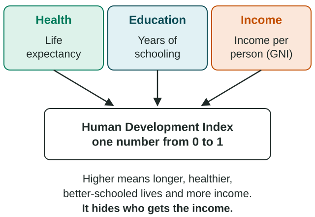

Measures of Development
Development is measured with income measures (GDP, GNP, GNI per capita), social measures (fertility, infant mortality, literacy, health care, energy use) and composites: the HDI (health, education, income) and the GII (gaps between women and men, lower is better).
Part 1 · Hook
Why this matters
Part 2 · Prerequisite check
Quick check before you start
1. What does the infant mortality rate measure?
- Deaths of babies under one year per 1,000 live births
- Births per 1,000 people a year
- Children per woman in her lifetime
- Deaths of people over 65 per 1,000
Show the answer
It counts deaths of babies under one per 1,000 live births, a key development indicator.
- Correct: Deaths of babies under one year per 1,000 live births:
- Births per 1,000 people a year:
- Children per woman in her lifetime:
- Deaths of people over 65 per 1,000:
2. Which economic sector includes street vendors, teachers and truck drivers?
- Tertiary
- Primary
- Secondary
- Quinary
Show the answer
Selling, teaching and transport are services: the tertiary sector.
- Correct: Tertiary:
- Primary:
- Secondary:
- Quinary:
Part 3 · See it
See it first

Part 4 · Step by step
How it works, step by step
- Development has many parts: income, health, schooling, fairnessno single number can capture all of it
- GNI per capita is an average of counted incomeit hides inequality, unpaid work and the informal sector
- The HDI adds life expectancy and schooling to incomeit shows more of people's lives, but still as a national average
- Women and men often have unequal health, power and paid workthe GII measures that gap, where lower is better
Part 5 · Key ideas
Key ideas
- GDP counts production inside the borders; GNP and GNI count income earned by a country's people and firms anywhere. Per capita means per person.
- The informal sector (unregistered, untaxed work) and unpaid work are missing from much of GNI.
- The HDI combines health (life expectancy), education (years of schooling) and income (GNI per capita, PPP), from 0 to 1.
- The GII measures gaps between women and men in reproductive health, empowerment and paid work. Lower is better.
- Every measure shows something and hides something; name both, and compare indices within one edition.
Part 6 · Misconception
A common mistake
The wrong idea: A high GNI per capita means most people in the country live well.
What actually happens: GNI per capita is an average. It hides how income is shared, the informal sector and unpaid work, so pair it with HDI, GII and social measures.
Part 7 · Check yourself
Check yourself
Exam-style questions. Anything you miss goes into your review queue.
Data
Development indicators for five countries
| Country | GNI per capita (US$) | HDI | GII | Workers in informal jobs (%) | Total fertility rate |
|---|---|---|---|---|---|
| A | 52,000 | 0.94 | 0.05 | 10 | 1.6 |
| B | 21,000 | 0.72 | 0.52 | 45 | 3.8 |
| C | 9,800 | 0.80 | 0.21 | 30 | 1.9 |
| D | 3,200 | 0.62 | 0.44 | 75 | 3.1 |
| E | 900 | 0.42 | 0.61 | 90 | 6.0 |
Invented data for practice.
1. Which country's HDI is lowest compared with what its GNI per capita would suggest?
- Country A
- Country B
- Country C
- Country E
Show the answer
Compare the order of the two columns: B is second in income but third in HDI, below C, so its health and education lag behind its income.
- Country A: Country A has both the highest income and the highest HDI, so they match.
- Correct: Country B: Right: B has more than twice C's income but a lower HDI (0.72 against 0.80), so its income is not turning into health and schooling.
- Country C: C has a higher HDI than B with less than half the income, so it does better than its income suggests.
- Country E: E has the lowest income and the lowest HDI, so they match.
2. According to the table, which country has the least gender inequality?
- Country A, with a GII of 0.05
- Country E, with a GII of 0.61
- Country B, with the second-highest income
- Country C, with a GII of 0.21
Show the answer
GII runs the other way from HDI: 0 would mean no gap between women and men, so the lowest value shows the least inequality.
- Correct: Country A, with a GII of 0.05: Right: for GII, lower means less inequality, and 0.05 is the lowest value.
- Country E, with a GII of 0.61: This is the highest GII, so the most inequality. For GII, lower is better.
- Country B, with the second-highest income: Income does not measure the gap between women and men; read the GII column.
- Country C, with a GII of 0.21: C's GII is low, but A's (0.05) is lower.
3. Compare the GII and total fertility rate columns. Which pattern and explanation fit the data?
- Higher GII goes with lower fertility, because unequal places have small families
- The columns show no pattern
- Fertility depends on GNI alone, so GII adds nothing to explain it
- Higher GII, higher fertility: less schooling for women
Show the answer
Countries with higher GII (wider gaps in schooling, empowerment and paid work) have higher fertility here; female education and paid work tend to lower fertility.
- Higher GII goes with lower fertility, because unequal places have small families: The data show the reverse: E has the highest GII and the highest fertility.
- The columns show no pattern: They rise together: A has the lowest of both and E the highest of both.
- Fertility depends on GNI alone, so GII adds nothing to explain it: B has higher income than C but much higher fertility, alongside a much higher GII.
- Correct: Higher GII, higher fertility: less schooling for women: Right: where gaps in schooling and paid work are wide, women tend to marry younger and have more children.
4. A Japanese-owned car plant in Kentucky sends its profits to its owners in Japan. How is that output counted?
- In US GDP, because the plant is inside the United States
- In US GNI alone, since the cars are sold in the United States
- In neither measure, because the owners are foreign
- In Japan's GDP, because the owners live in Japan
Show the answer
GDP is about where production happens; GNI is about who earns the income. The plant adds to US GDP, and its profits add to Japan's GNI.
- Correct: In US GDP, because the plant is inside the United States: Right: GDP counts what is produced inside the borders; the profits earned by Japanese owners count in Japan's GNI.
- In US GNI alone, since the cars are sold in the United States: GNI follows who earns the income, here the Japanese owners, not where the cars are sold.
- In neither measure, because the owners are foreign: Production inside US borders always counts in US GDP.
- In Japan's GDP, because the owners live in Japan: GDP counts production inside a country's borders; the plant is in Kentucky.
5. Which measures make up the Human Development Index? Select all that apply.
- Life expectancy at birth
- Years of schooling
- GNI per capita (PPP)
- Seats held by women in parliament
- Energy use per person
- Share of workers in the informal sector
Show the answer
The HDI combines health (life expectancy), education (years of schooling) and income (GNI per capita, PPP).
- Correct: Life expectancy at birth: Right: the health dimension.
- Correct: Years of schooling: Right: the education dimension (expected and average years).
- Correct: GNI per capita (PPP): Right: the standard of living dimension.
- Seats held by women in parliament: That is part of the Gender Inequality Index, not the HDI.
- Energy use per person: Energy use is a separate indicator, not part of the HDI.
- Share of workers in the informal sector: Informal work is not one of the HDI's three dimensions.
6. The Indian state of Kerala has long had higher literacy and life expectancy than most other Indian states, though several Indian states have a higher income per person. What does this show about scale?
- India's national HDI hides large differences between its states
- Kerala's data prove that income has no link to health anywhere
- National data are more accurate than state data
- Literacy can be measured at the national scale but not by state
Show the answer
The same measure at the local (subnational) scale, state by state, reveals variation that the national value hides.
- Correct: India's national HDI hides large differences between its states: Right: a national average smooths over differences between states, so a state-by-state view tells a different story.
- Kerala's data prove that income has no link to health anywhere: One case cannot show that; it shows income is not the only driver.
- National data are more accurate than state data: Neither is more accurate; they answer questions at different scales.
- Literacy can be measured at the national scale but not by state: Literacy is measured by state; that is how Kerala's rate is known.
Part 8 · Summary
Summary
Part 9 · Up next
What comes next
Part 10 · Connections